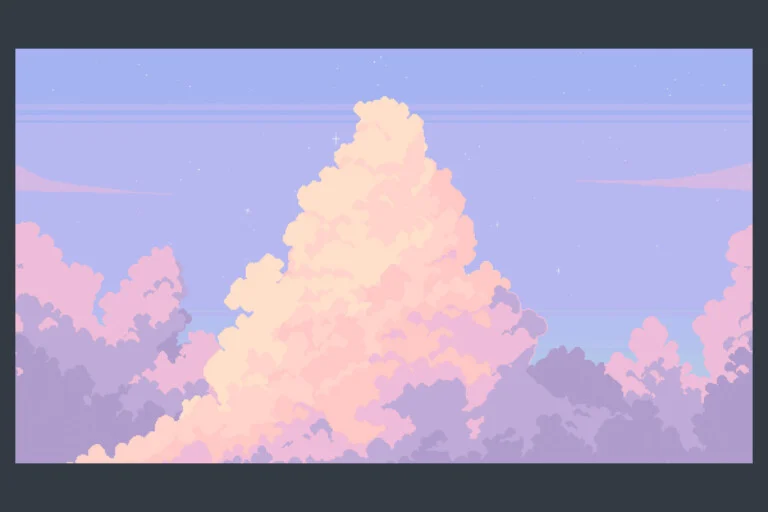

// image from itch.io https://edermunizz.itch.io/free-pixel-art-forest 
You Won!
return to main menu
// how to add audio https://www.tutorialathome.in/html/playing-audio-page-loads-html5
//audio from opengameart.org